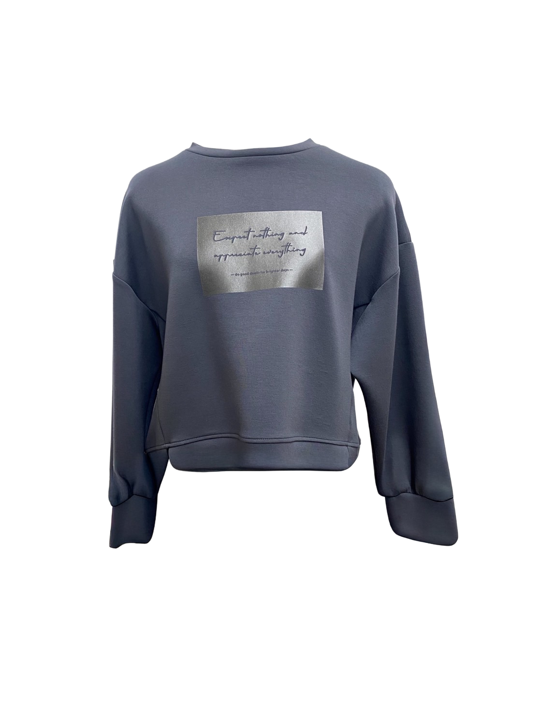

スマホ専用です 📱
このバーチャル試着ソフトはスマートフォン（iOS/Android）のブラウザでご利用ください。
スマホのカメラでQRを読み取って開いてください。
カメラの準備をします
「カメラを開始」を押すと、ブラウザからカメラ許可を求められます。
初期設定はインカメラ・ミラー表示です。
端末から約30〜50cm離し、肩が胸まで映る距離で開始すると安定します。
※ 右下の⚙で、アウトカメラやミラー表示に切り替えできます。